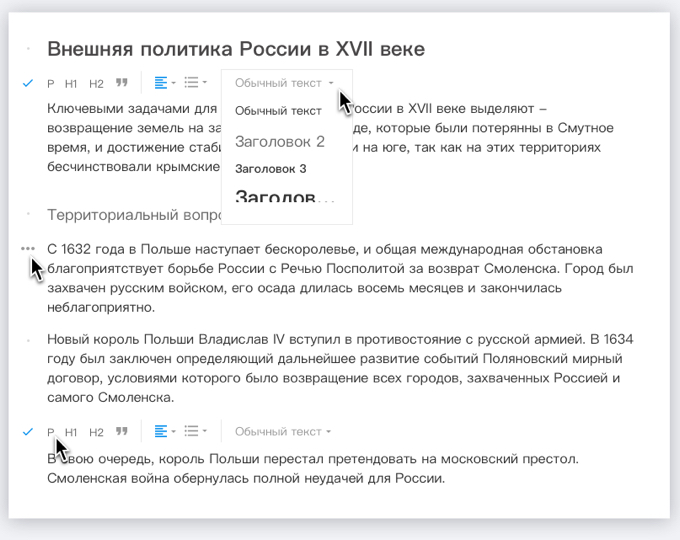
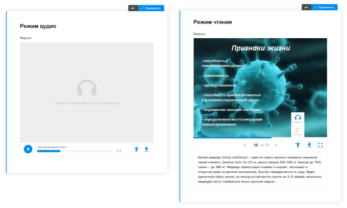
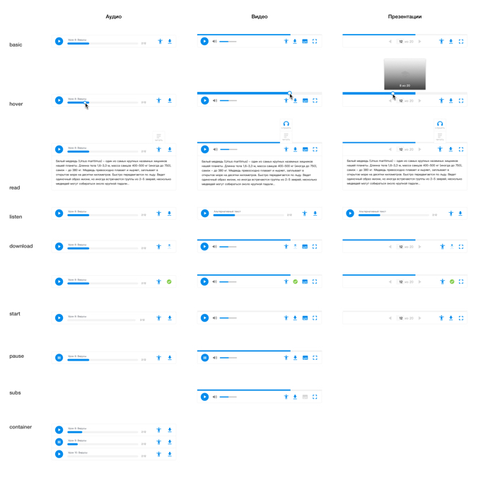

E-learning Publishing Platform and other freelance projects (2017) UI design and web development
tl;dr
By the end of 2016 I've started working remotely on several projects related to EdTech and self-development fields.
- e-Learning Publishing Platform for creating interactive e-workbooks for schools.
- Tutors' Empire — online school for preparation to the russian Unified State Exam.
- And other projects like, for example, TriFit – a platform where professional fitness coaches can work with their clients remotely by providing them meal and workout plans.
For these projects I was doing:
— Wireframes, mockups, UI design;
— Communication with remote teams (developers, managers and owners);
— UI-kits design.
— UI Markup for several projects with HTML5, Sass, Bootstrap3 & BEM.
e-Learning Publishing Platform
My favorite project at that period. The projects has hundreds of screens, systems, details and elements inside, I was very exited to be a part of it.
 Architacture visualization of a book UI
The goal of this project is a development of a platform for creating, distributing and using e-books, primarily for schools.
Architacture visualization of a book UI
The goal of this project is a development of a platform for creating, distributing and using e-books, primarily for schools.

Start page that I was working on This platform provides various tools for representing information in different formats like texts, audio, video, presentations. More than that, you can create tasks and tests such as multiple choice tests, drag-n-drop, graph and matrix builders and so on.
Interface Design
I took part in adapting UI elements for different screen sizes, completing designs of some elements or their different states, designing new types of tasks, media representation tools and was working on presentation materials.
For example, I worked with text editing tool: 
Media Player
As I said the platform provides different tools for media files representation (images, audio, video and presentations). I was given a task to design a media player for presentations and refine and unify UI of video and audio players.
So, this is how a player for presentations looks in an IDE. You can download a presentation, switch to a full-screen mode and so on. A hover on a progressbar shows a slide's preview. When editing, slides can be swapped, deleted or added new ones. You can also add an explanatory text to the slide.

Player for presentations inside IDE The player has audio and reading modes for users with disabilities.  Audio and reading modes For clarity I documented all the states of media players for audio, video and presentations.  States of media players
Documentation
Most of my assignments related to this project were to work with the documentation. I needed to show all the screens, the states of the components of the system (and finish them, if something was missing).
 Documentation example
Documentation example
Tutors' Empire
For this project I designed student's UI, using wireframes provided to me. And we used boooya uikit for this project.
 Wireframes
Plus, I did a html&css markup of some pages.
Wireframes
Plus, I did a html&css markup of some pages.
A student can enroll to several online classes where he or she will be able to join lectures and rate tutors after that, take tests, complete the assignments and get grades for them. On a dashboard he or she can see a rating among other students and a schedule.